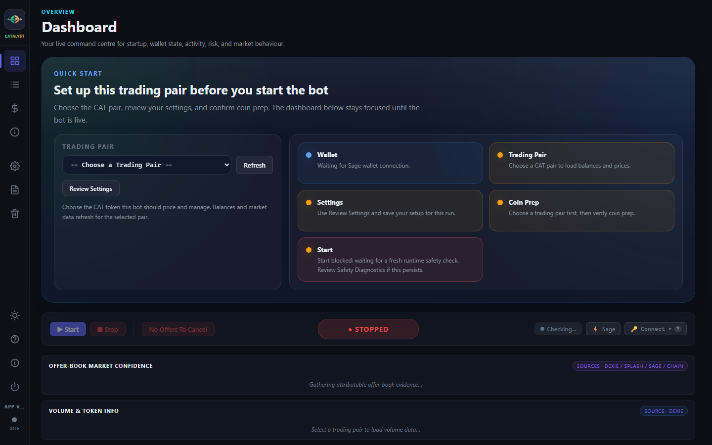
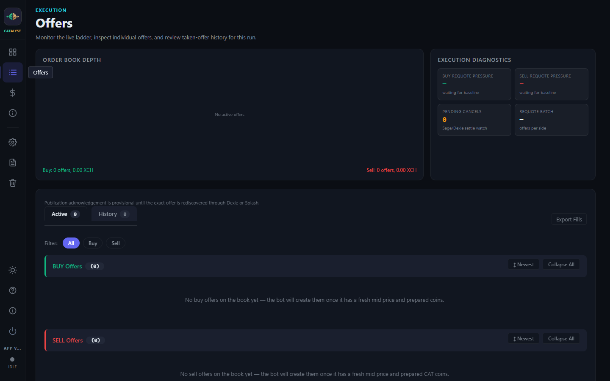
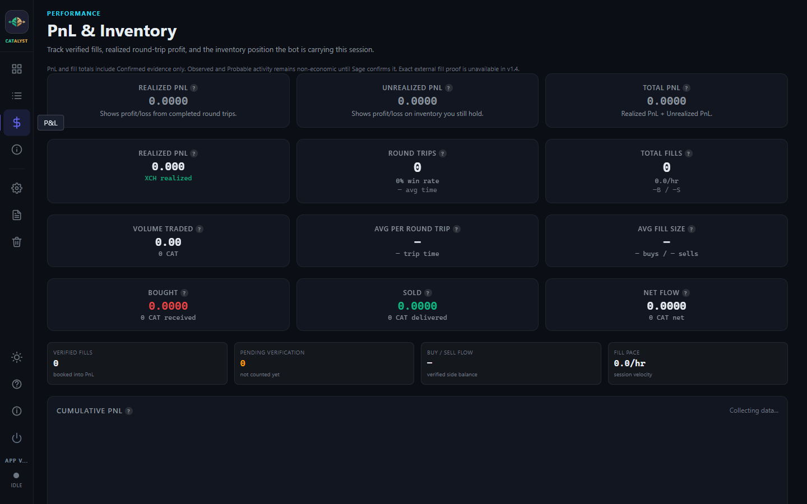
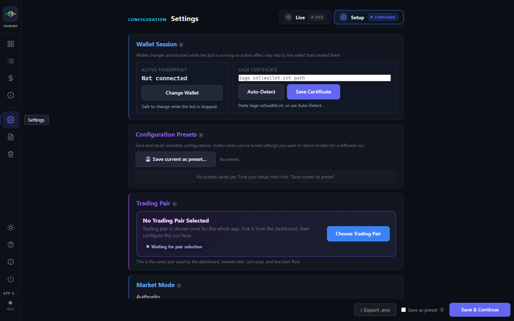

Why CATalyst changed
TibetSwap has shut down. Earlier CATalyst versions used its AMM data for pricing and arbitrage, so those TibetSwap-dependent features are retired. We redesigned CATalyst to manage CAT/XCH offers through Dexie without relying on TibetSwap. Read TibetSwap's closure notice for the venue's announcement.
Dexie is the offer marketplace for this beta. Splash remains an optional way to broadcast the same signed offers, starts off for new installs, and does not replace Dexie.
Tester status
This is a test build. The Windows installer, Linux AppImage and Debian package passed their package smoke checks; automated tests and an isolated Sage offer lifecycle passed. The current build is still undergoing real-wallet offer and recovery testing, independent second-PC live acceptance, and long-running stability checks. Please report unexpected behavior; a successful install does not mean those checks have passed.
Dexie is the primary offer publication path. Splash is optional and starts off for new installs; delivery to a separate Splash peer has not yet been confirmed for this build. Leave Splash off unless you specifically intend to test it, and verify offer visibility independently.
1. Download and verify
- Use the CATalyst download panel only when it explicitly lists the v1.4 Dexie beta. Windows and Linux downloads point to official GitHub Releases.
- Compare the downloaded package's SHA-256 with the value on the page and its release sidecar before running it.
- On Windows, the beta installer has no Authenticode publisher certificate, so SmartScreen may show an unrecognized-app warning. Do not continue if Windows or your security software reports malware or potentially unwanted software.
- On Linux x86-64, Ubuntu/Debian users can choose the
.deb. The exact source release also has an AppImage and tarball. The packages follow the PyInstaller, AppImage and Debian build path used for the earlier working Linux release. - In the download directory, verify the Debian package with
sha256sum -c catalyst_v1.4.1_amd64.deb.sha256, then install it usingsudo apt install ./catalyst_v1.4.1_amd64.deb. Or verify the matching AppImage sidecar, runchmod +x Catalyst-linux-v1.4.1-x86_64.AppImage, and launch the AppImage. Some distributions need FUSE 2 for AppImage; extract-and-run mode is available when FUSE is absent.
2. Connect Sage and check the pair
- Start Sage Wallet, choose the intended mainnet wallet, and wait for sync. CATalyst will show its connection state in the native app.
- Read the Risk Disclosure in the app. Choose the intended CAT/XCH pair and verify the full CAT asset ID and wallet fingerprint, not just the ticker or logo.
- Check spendable balances, pending transactions, and existing offers in Sage. If any state is unexpected, stop before starting a bot or campaign.
3. Review the market and limits
The Market view shows Dexie offer-book evidence and its freshness. When the book cannot support a trustworthy reference price, Follow mode can hold or withdraw exposure instead of quoting from stale or invented data.
Choose a liquidity mode and review offer sizes, inventory limits, price corridor, and any Bootstrap campaign duration and budget. A Bootstrap campaign for a thin market is a separate, bounded decision. It does not begin just because you selected a pair.
Before any start action
- Confirm the wallet fingerprint and exact CAT asset ID again.
- Review the displayed buy and sell sizes, total inventory budgets, and maximum network fee.
- Check for pending transactions or existing offers that could overlap the new plan.
- Approve the exact action in the app only if its limits match what you intend.
4. Coin preparation and offers
Each offer needs suitable wallet coins. Coin Prep can split coins and may cancel existing offers first. Its estimated network fee and spending ceiling require a separate approval. Review the on-screen summary and recovery state before repeating any interrupted operation.
Once running, compare CATalyst's Offers view with Sage's wallet offers and the Dexie links. A posted offer may take time to appear in a public indexer; Sage and confirmed chain state are authoritative for wallet effects.
Splash P2P is an optional offer broadcasting path in Settings. It starts off for new installs and can share your signed offers with peers when enabled. A running local Splash node does not by itself prove that peers received an offer; check peer status and exact offer rediscovery before relying on broadcast reach.
5. Stop, recover, and report
Stop Bot stops new trading work. Existing offers can remain live until you explicitly cancel them and confirm they are terminal in Sage. Cancel All is a separate protected action. On restart, use the Previous Session choices only after checking which offers are still active.
If the app shows a safety block, stale wallet state, unknown Coin Prep outcome, or conflicting offers, leave it stopped and gather a Debug Bundle from the Logs tab. Do not repeatedly retry a wallet action whose outcome is unknown.
Report bugs through the public issue forms. Never post seed phrases, private keys, wallet TLS keys, or unredacted personal wallet data.
Current v1.4.1 screens
These screenshots come from an isolated preview of the exact v1.4.1 interface with no Sage wallet connected. Empty offers and zero performance are intentional; they are not live trading results.




Frequently asked questions
Why does the Windows beta say “unsigned”?
The Windows installer does not have an Authenticode publisher certificate. Its update manifest is cryptographically signed, and the release has SHA-256 checksums. Those are different controls: a signed update manifest does not make the installer Authenticode-signed. Linux AppImage and Debian files have SHA-256 sidecars but are not signed by a distribution repository key. Check exact files and stop if security software identifies malware or a potentially unwanted app.
Does “Dexie only” mean Splash was removed?
No. Dexie is the offer marketplace. Splash can optionally broadcast the same signed offers to peers and starts off. Separate-peer delivery has not been proven for this beta; check the exact offer's visibility before relying on Splash reach.
Where does the reference price come from?
Fresh Dexie offer-book evidence for the selected CAT/XCH pair. TibetSwap AMM pricing is retired. When attributable market depth is insufficient, CATalyst can hold or withdraw exposure instead of inventing a price.
Do I need Sage Wallet?
Yes. Sage must be running, synced and connected to the intended wallet and network. Check the full CAT asset ID and wallet fingerprint before any wallet action. CATalyst never needs your seed phrase.
What happens when I stop the bot?
Stopping prevents new trading work. Existing offers may remain live until you request cancellation and confirm terminal state in Sage. Cancel All is separate. After a restart, inspect the previous session and any unresolved operation before retrying.
Is this ready for unattended live trading?
No. It is an opt-in tester beta. Exact-candidate original-wallet active-offer recovery, independent second-PC live acceptance, complete native UI review, independent Splash receipt and final 24-hour trace audits remain open. Use a separate test wallet, small amounts and an attentive operator.
How do I report an issue?
Use the public issue forms with the exact version and a redacted Debug Bundle from Logs if available. Do not post seed phrases, private keys, wallet TLS keys or unredacted wallet data.